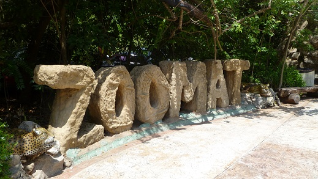

Ubicado en la reserva “El Zapotal”, una valiosa reserva ecológica de más de 100 hectáreas de selva semi-húmeda cuyo nombre se debe a la presencia de varias especies de árboles de zapote. Aquí el Zoológico exhibe una gran diversidad de fauna del Estado a través de las 220 especies animales en sus recintos naturales y 154 especies que habitan libremente a lo largo del área. El ZooMAT lleva en sus siglas el nombre de Miguel Álvarez del Toro, el naturalista que le diera el espíritu que hizo de éste un zoológico diferente. Inició sus actividades en 1942 y en 1980 sus instalaciones se trasladaron a "El Zapotal". Es reconocido a nivel mundial por su original diseño, por exhibir únicamente fauna chiapaneca en su hábitat natural y por la investigación en pro de la conservación. El circuito tiene una longitud de 2.5 km por lo que el recorrido dura aproximadamente 3 horas, comenzando con una tienda de artesanías. También cuenta con cafeterías para refrescarse mientras se recorren los selváticos senderos, el aula de audiovisuales, librería, área de orientación ecológica y zonas de comedores para días de campo.monos araña y saraguatos, tortugas, mapaches, arañas e insectos, así como cocodrilos son animales que se exhiben.
Dirección: Calzada Cerro Hueco s/n reserva el Zapotal (INHE), C.P.29094 Apartado 6
Contacto:
Teléfono: 61 4 47 00; 61 4 47 01; 61 4 47 65 ext. 51043
Georeferencia:
Del parque central, continuar por la calle central sur hasta incorporarse al libramiento sur lado oriente para luego subir sobre la 1ª Oriente sur de la colonia Francisco I. Madero, seguirse de frente, hasta llegar al Zoológico Miguel Álvarez del Toro.
Si no cuentas con transporte particular puedes tomar el transporte público de la ruta 60, en la 7a Sur y 1a. oriente.
Recorridos guiados, exhibición de especies de la región, exposiciones permanentes y temporales de fauna.

posicione el mouse sobre las imágenes